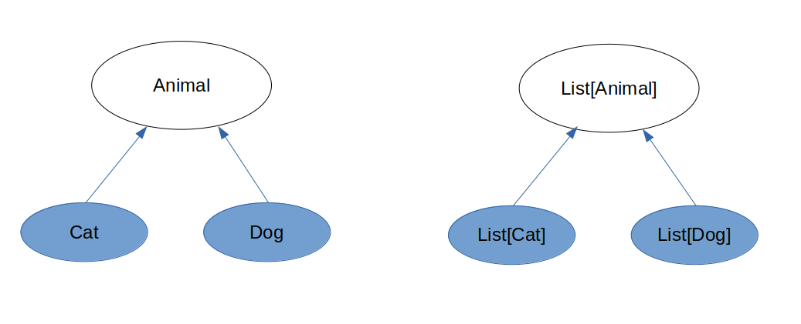

Система типов в Scala
Что такое тип?
Тип данных — категоризация абстрактного множества возможных значений, характеристик и набор операций для некоторого атрибута (IEEE Std 1320.2-1998)
Тип данных — категоризация аргументов операций над значениями, как правило, охватывающая как поведение, так и представление (ISO/IEC 19500-2:2003)
Тип данных определяет множество значений, которые могут принимать данные. Одновременно тип определяет набор операций, которые можно осуществлять над данными этого типа.
Что такое тип?
int a;
a = 42; // Ok
a = "Hello!" // Error
val b: Boolean = false
b || true // Ок
b > 1 // Error
b.someMethod() // ??
Система типов
Система типов - это:
- набор базовых типов
- правила и механизмы для описания новых типов
- правила по применению различных типов
Виды систем типов
- По времени проверки правил
- Статическая типизация
- Динамическая типизация
- По строгости проверки правил
- Строго типизированные (сильная типизация, strongly typed)
- Нестрого типизированные (слабая типизация, weakly typed)
- По необходимости явно указывать тип
- Явные
- Неявные
Виды систем типов
Статическая/динамическая типизация
- Статическая - проверка типов осуществляется во время компиляции
Примеры: Java, C#, TypeScript, C/C++, Rust, Scala и др.
- Динамическая - проверка типов осуществляется во время работы программы
Примеры: JavaScript, Python, PHP, Ruby, Perl, Clojure и др.
Виды систем типов
Статическая/динамическая типизация
Статические языки зачастую имеют возможность использовать динамическую типизацию
(scala.Dynamic)
Динамические прикручивают поверх себя инструменты проводящие статическую
проверку кода, в том числе типов
(JavaScript - Flow/TypeScript, Python - PEP 484 introduced type hints)
Отличие в том, что закладывалось изначально в язык
Виды систем типов
Строгая/нестрогая типизация
Строгая типизация - необходимо явно приводить типы
Примеры: Java, C#, Scala, Python и др.
Нестрогая типизация - компилятором (интерпретатором) делаются допущения при проверке типов
Примеры: JavaScript, PHP и др.
На нестрого типизированных языках проще писать (не надо бороться с системой типов),
но
сложнее писать корректные и безопасные программы
Виды систем типов
Явная/неявная типизация
Явная типизация - необходимо явно задавать тип функций, значений, аргументов
Пример: Java, C++, C#, Scala и др.
Неявная типизация - тип функций, переменных, аргументов не указывается
JavaScrip, PHP и др.
Система типов в Scala
Вывод типов
Возможность компилятором самостоятельно выводить типы значений, функций
Пример:
val x = "Hello world" // val x: String
def someFunction() = 42 // def someFunction(): Int
val y = {
if(randomBoolean) {
Cat // наследует Animal
} else {
Dog // наследует Animal
}
}
// val y: Animal
Виды систем типов
Что лучше..?
Виды систем типов
Что лучше?
Большинство программистов считают что в большинстве случаев
лучше использовать язык со статической и строгой типизацией
Ниша динамических и/или слабо типизированных языков - небольших
и простые
приложения (скрипты, примитивные приложения, обучение),
но есть и исключения
В каждом конкретном случае лучше провести анализ и выбрать подходящий
язык,
в зависимости от приложения, которое планируется написать
Виды систем типов
Статическая строгая типизация
Проблемы для языка:
- Сложный компилятор (дорого, багоемко, неповоротливо)
- Долгая компиляция
Проблемы для разработчика:
- Нужно описывать типы
- Сложнее использовать
Виды систем типов
Статическая строгая типизация
Решение проблем разработчиков в Scala:
(однако создателям библиотек приходиться попотеть)
((также как и создателям языка))
Система типов в Scala
Гибко и удобно использовать систему типов позволяет полиморфизм
Что такое полиморфизм..?
Система типов в Scala
Полиморфизм
Принципиальная возможность для одного и того же кода обрабатывать данные разных типов
Зачастую ставятся определенные условия, которым должны соответствовать типы
В каждом конкретном языке - набор отдельных фич которые дают ту или иную степерь полиморфизма
Полиморфизм
Виды
полиморфизм подтипов (subtyping | наследование)
параметрический полиморфизм (generics)
ad-hoc полиморфизм (перегрузка функций/операторов, авто приведение)
Полиморфизм подтипов
Полифморфизм подтипов даёт возможность выстраивать иерархию типов
(задавать отношение между типами)
Новые типы задаются через определение новых class/trait
Отношения задаются в основном через наследование
Полиморфизм подтипов
Буква L в SOLID
Liskov Substitution Principle (Принцип подстановки Барбары Лисков)
Формально:если для некоторого типа A выполняется какое-то правило
foo(A.value) == OK
то тогда для любого типа B, являющегося подтипом типа A
B <: A
также должно выполняться это правило
foo(B.value) == OK
Полиморфизм подтипов
Liskov Substitution Principle
// для обозначения подтипа в Scala используется "<:"
// Subtype <: Supertype
class Animal
class Cat extends Animal
// Cat <: Animal
class Dog extends Animal
// Dog <: Animal
def foo(x: Animal) = ???
foo(new Cat()) // OK if Cat <: Animal
foo(new Dog()) // OK if Dog <: Animal
foo("Hello world") // compile error
Базовые типы в scala
Иерархия

Полиморфизм подтипов
Any - надтип (supertype) всех типов в Scala
Использование:
def foo(x: Any) = ???
val a = if (randomBoolean) {
"Hello world"
} else {
42
}
// val a: Any - Почему..?
Базовые типы в scala
AnyVal - тип оберток над значениями
Компилятор с такими типами обходится по особенному - стремится оптимизировать так, чтобы обертка не создавала реальный объект в памяти
Использование:примитивы - Int, Long, Double, и т.д.
Обертки добавляющие методы или дополнительный тип
Базовые типы в scala
Пример создания типа от AnyVal
// Обёртка над типом для добавления новых функций
class Age(val underlying: Int) extends AnyVal {
def foo: Wrapper = new Wrapper(underlying * 19)
}
class Meter(val value: Double) extends AnyVal {
def +(m: Meter): Meter = new Meter(value + m.value)
}
// по сути, после компиляции здесь просто будут операции над Double
val x = new Meter(3.4)
val y = new Meter(4.3)
val z = x + y
// Помогает работать с примитивными типами как с чем-то осмысленным
case class Age(val value: Int) extends AnyVal
def isOlderThen18(age: Age): Boolean = age.value >= 18
Базовые типы в scala
Unit
Тип с единственным значением "()"
Используется в местах где в C#/Java стоял бы "void"
Обычно связано с сайд-эффектами (печать в консоль, запись в
базу, мутацию какого-то внешнего объекта, и т.д.)
Значения "()" не существует во время исполнения (абстракция на уровне компилятора)
Полиморфизм подтипов
Переходим к AnyRef
Базовые типы в scala
AnyRef - надтип для всех ссылочных типов.
Использование:
Базовые типы в scala
Null - подтип для всех подтипов AnyRef.
Т.е. для любого X <: AnyRef справедливо Null <: X
Это делается автоматически на уровне компилятора
Литерал null имеет этот тип
Так как Null - это подтип любого подтипа AnyRef, то на место любого ссылочного типа можно подставить null
Также это позволяет работать системе вывода типов при проставлении null
Базовые типы в scala
Null
val a = if (randomBoolean) {
"Hello world" // String
} else {
null // Null
}
// val a: String - потому что Null <: String
Базовые типы в scala
Nothing - подтип всех типов, также называемый bottom type.
Т.е. для любого X справедливо Nothing <: X
Тип у которого нет значениний
Нужен для полноты системы типов
Выражение в результате которого выбрасывается exception имеет тип Nothing
Базовые типы в scala
Nothing
val a = if (randomBoolean) {
42 // Int
} else {
??? // Nothing
}
// val a: Int - потому что Nothing <: Int
sealed abstract class Option[+A] { ... }
final case class Some[+A](x: A) extends Option[A] {
def isEmpty = false
def get = x
}
case object None extends Option[Nothing] {
def isEmpty = true
def get = throw new NoSuchElementException("None.get")
}
Базовые типы в scala
Подведем итоги
Парам. полиморфизм
def someMethod[T](x: T) = ???
class List[A] {
def add(a: A) = ???
}
trait Box[A] {
val value: A
def compare[B](other: Box[B]): Boolean
}
Парам. полиморфизм
является ли List[A] - типом?
Парам. полиморфизм
является ли List[A] типом? - Нет
Нельзя задать переменную с типом List[A]:
val x: List[A] // compile error
Можно задать переменную с типом, сконструированным с помощью дженерика:
val x: List[Int] // OK - тип списка интов
Парам. полиморфизм
List[A] - множество типов различных типов
Конструктор типа
Тип Х -> Конструктор List[_] -> конструируем тип List[X]
Парам. полиморфизм
List[A] в иерархии подтипов
Парам. полиморфизм
Вариантность
Парам. полиморфизм
Ковариантный (covariance) - List[+A]
Парам. полиморфизм
Ковариантный (covariance) - List[+A]
trait Animal {
def makeSound: String
}
class Cat extends Animal {
def makeSound = "meow"
}
class Dog extends Animal {
def makeSound = "bark"
}
def fooWithCovarianceParam(items: List[Animal]): Unit = {
//some side effect
}
def fooWithInvariantParam(items: Array[Animal]): Unit = {
//some side effect
}
fooWithCovarianceParam(List(new Dog())) // OK, так как List[+A] ковариантен
fooWithInvariantParam(Array(new Dog()))// ERROR, так как тип Array[A] инвариантен
Парам. полиморфизм
Проблема ковариантности
//допустим, MutableList - ковариантен. Помимо этого MutableList - мутабелен
trait Animal {
def makeSound: String
}
class Cat extends Animal {
def makeSound = "meow"
def jump = "jump"
}
class Dog extends Animal {
def makeSound = "bark"
}
def addDog(xs: MutableList[Animal]) = {
xs += new Dog()
}
val cats = MutableList[Cat](new Cat(), new Cat())
val horror = addDog(cats)
cats.forEach(cat => cat.jump) //error
Парам. полиморфизм
Проблема ковариантности
trait Box[+A] {
val value: A
def contains(a: A): Boolean
}
// Потенциальная опасность получить RunTimeError - Почему?
trait Animal
case class Cat(name: String) extends Animal
case class Dog(age: Int) extends Animal
val catBox = new Box[Cat] {
override val value: Cat = Cat("Sinus")
override def contains(a: Cat): Boolean = value.name == a.name
}
val animalBox: Box[Animal] = catBox
animalBox.contains(Dog(12)) // RunTimeError
trait Box[+A] {
def contains(a: A): Boolean
}
// compile error (Covariant type A occurs in contravariant position in type A of value a)
Парам. полиморфизм
Решение
trait Box[+A] {
val value: A
def contains[B >: A](a: B): Boolean
}
val catBox = new Box[Cat] {
override val value: Cat = Cat("Sinus")
override def contains(a: Cat): Boolean = value.name == a.name // compile error
}
val catBox = new Box[Cat] {
override val value: Cat = Cat("Sinus")
override def contains[B >: Cat](a: B): Boolean = ???
}
Парам. полиморфизм
Контравариантность (contravariance) - Vet[-A]
Парам. полиморфизм
Контрвариантность (contravariance)
trait Animal {
def makeSound: String
}
class Cat extends Animal {
def makeSound = "meow"
}
class Dog extends Animal {
def makeSound = "bark"
}
class Vet[-A]
def treatDogs(vet: Vet[Dog]) {}
val commonVet = new Vet[Animal]()
treatDogs(commonVet) // OK, ошибки не будет, так как Vet Контрвариантный
Дополнительные фичи
системы типов
mixins
Mixins, как правило, используются для добавления дополнительной функциональности
Для использования mixin используется ключевое слово with
trait Human {
def say(): Unit = ???
}
trait Wizard {
def doMagic(): Unit = ???
}
class HumanWithMagic extends Human with Wizard
val a: Human with Wizard = new HumanWithMagic
a.say()
a.doMagic()
self-type
Помогают накладывать ограничение на использование mixin
trait Animal
trait Car
trait CanJump { self: Animal =>
def jump: Unit = ???
}
class Cat extends Animal with CanJump
class Kia extends Car with CanJump // compile error
Система типов в Scala 3
Нововведения в выведении типов
intersection type
Тип вида A & B & C & ... интерпретируется как все эти типы в один момент
trait Foo
def foo(): Unit
trait Bar[A]
def setBar(value: A): Unit
def fooBar(x: Foo & Bar[String]): Unit =
x.foo()
x.setBar("Hello")
union type
Тип вида A | B | C | ... может быть одним из перечисленных типов в один момент
Для обработки такого типа необходимо использовать pattern matching
case class Username(name: String)
case class Password(hash: Hash)
def help(id: Username | Password) =
val user = id match
case Username(name) => ???
case Password(hash) => ???